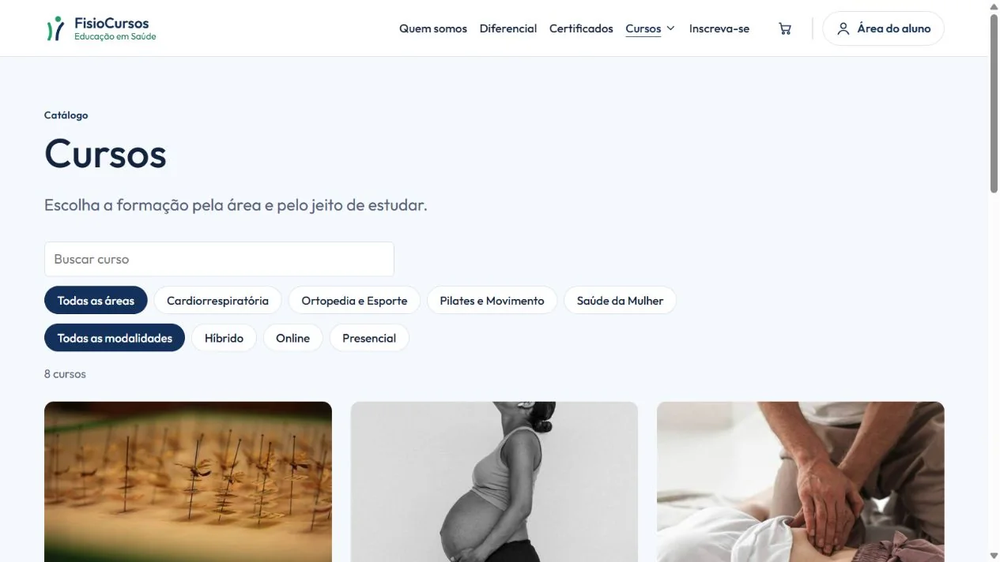

Plataforma de Cursos
Em desenvolvimentoDo catálogo ao certificado: uma aplicação para organizar cursos, matrículas e a jornada do aluno.
Explorar projeto
O problema
Centralizar informações de cursos, inscrições e acompanhamento que podem ficar dispersas em mensagens e controles manuais.
O que desenvolvo
- Catálogo, cursos e turmas, com área do aluno e acompanhamento de progresso.
- API REST, persistência e permissões por perfil para administração, instrutores e financeiro.
- Regras para matrículas, vagas, lista de espera e emissão de certificados em PDF.
Demonstração visual
Passe por quatro telas da versão local para conhecer o fluxo. As imagens usam dados de exemplo.
1 de 4 — Catálogo: o visitante encontra cursos e filtra por área e modalidade.
Decisões técnicas
- API e interface separadas: Angular consome a API REST em Java e Spring Boot; regras de matrícula e autorização ficam no servidor.
- Evolução do banco: PostgreSQL e migrações Flyway organizam as alterações de estrutura.
- Regras verificáveis: testes cobrem situações como confirmação repetida de pagamento, lista de espera e critérios de certificado.
Validação local registrada em 12/10/2026: 17 testes de back-end e 538 testes de interface passaram, com compilação de produção concluída. Esse registro se refere à versão demonstrada.
Aprendizado em foco
Integração entre front-end, API e banco relacional; organização por domínio e validação das regras de negócio.
Projeto em evolução. Pagamentos e e-mails da demonstração são simulados; as telas não representam uma operação comercial em produção. Uso IA como apoio ao desenvolvimento e estudo as implementações.
Ver apresentação em PDF (abre em nova aba)